피라미드
사막 한가운데에 있는 피라미드에 도착합니다. 이제부터 석판을 지키는 장소의 입구에는 항상 가고일이 두 마리 지키고 있습니다. 동시에 잡아야 부활하지 않는데, 레벨이 33이므로 레벨3프레아가 적합합니다.
피라미드는 상당히 신경써서 나아가야 할 던전입니다. 여기저기 함정이 많고 조작할 기계도 많아서.. 아이템들 잘 챙겨서 갑시다. 희귀하고 강력한 것들이 곳곳에 널려 있습니다. 언데들이 많이 출몰하니 레퀴엠이 위력을 발휘합니다.
어느 던전에서 세크메티란 녀석이 출몰합니다. 도적의 장갑을 훔칠 수 있습니다. 그리 강하지는 않으니 어려울 것은.. 죽으면서 탑에 있는 형이 복수해 준다고 하는군요.
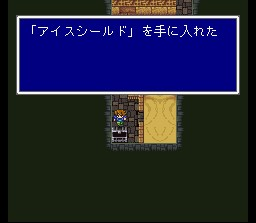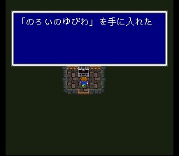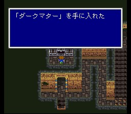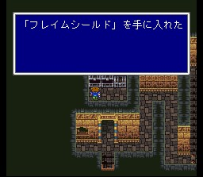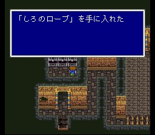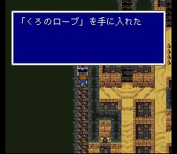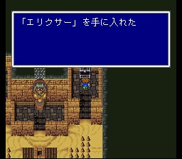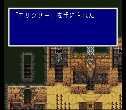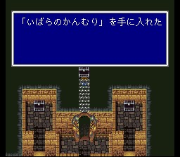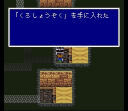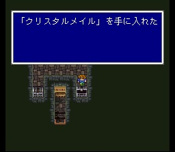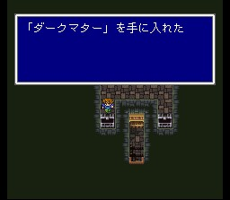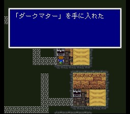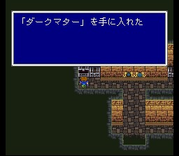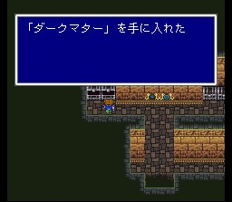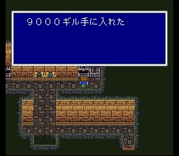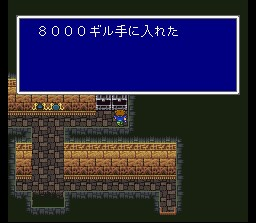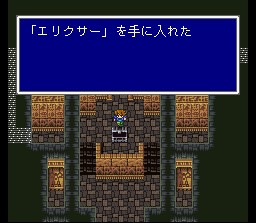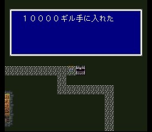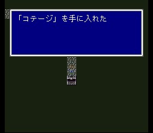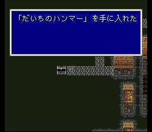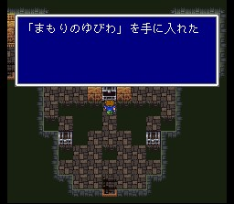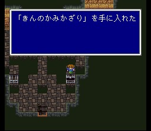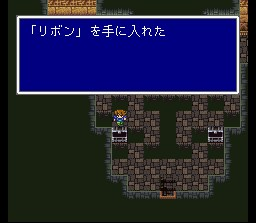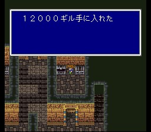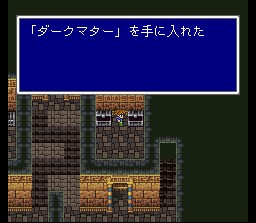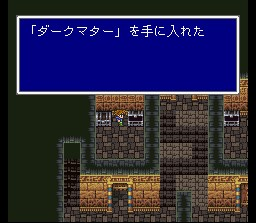
최상층에 도달하면 제1석판을 얻고, 바하무트의 봉인이 풀리는데 북의 산에서 기다린다고 합니다. 그리고 비공정이 놓여 있던 해적의 동굴 서쪽 반도가 사라지면서 사게이트성 북동쪽 해안으로 흘러내려오니 가지러 갑시다.